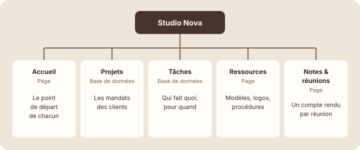

Les 5 parties de Studio Nova
À la fin de cette leçon, tu sauras organiser un espace en quelques grandes parties, chacune avec un rôle clair, et tu auras créé la base « Tâches ».
Étape 1 : comprendre
Tu connais maintenant toutes les briques : pages, blocs, sous-pages, liens, bases et vues. Ce module t'apprend à les assembler en un espace où toute l'équipe s'y retrouve.
Un bon espace n'est pas le plus rempli : c'est celui où chacun trouve vite ce qu'il cherche. Pour Studio Nova, cinq parties suffisent, chacune avec un rôle précis :
| Partie | Forme | Rôle |
|---|---|---|
| Accueil | Page | Le point de départ : un mot d'accueil, des liens, les tâches de la semaine. |
| Projets | Base de données | Un projet par entrée : client, statut, responsable, échéance. |
| Tâches | Base de données | Les actions concrètes : qui fait quoi, pour quand. |
| Ressources | Page | Les documents utiles à tous : modèles, logos, procédures. |
| Notes & réunions | Page | Un compte rendu par réunion, rangé en sous-pages. |
La règle d'or : chaque information a une seule place. Une tâche va dans « Tâches », pas dans un compte rendu de réunion et dans l'accueil en même temps. Si elle doit apparaître ailleurs, on fait un lien ou une vue, pas une copie.

Un espace clair a peu de parties, chacune avec un rôle unique ; chaque information n'a qu'une seule place.
Astuce : cinq à sept grandes parties, c'est le bon ordre de grandeur pour une petite équipe. Au-delà, on commence à hésiter sur l'endroit où ranger une page.
Espace A ou espace B ?
Voici deux espaces avec à peu près le même contenu. Lequel donnerais-tu à un nouveau collègue ?
- Nouvelle page
- notes 3
- Projets 2026 (copie)
- Projets
- Logo Luna final FINAL
- réunion
- À faire Emma
- À faire Lucas
- Sans titre
- Procédure facture
- Studio Nova
- ├─ Accueil — Studio Nova
- ├─ Projets
- ├─ Tâches
- ├─ Ressources
- └─ Notes & réunions
Dans l'espace A, dix pages au même niveau, des doublons (« Projets » et sa copie), des titres qui ne disent rien et une liste de tâches par personne. Dans l'espace B, cinq parties : les tâches d'Emma et de Lucas sont dans la même base « Tâches », avec un filtre par responsable. Tu sais où aller avant même de cliquer.
Compléter l'espace avec « Tâches »
Il manque une partie à ton espace Studio Nova : la base « Tâches ». Crée-la, puis vérifie que les cinq parties sont en place.
- Dans « Studio Nova », crée une sous-page « Tâches ».
- Transforme-la en base pleine page avec un Tableau, comme pour « Projets » au module 4.
- Crée les propriétés : Statut (Statut), Responsable (Personne), Échéance (Date).
- Ajoute trois tâches : « Finaliser la maquette du site Orion », « Préparer la réunion client », « Mettre à jour les ressources ».
- Ajoute une vue Board « Suivi » et une vue Tableau « Mes tâches » filtrée sur « Responsable est moi ».
Capture d'écran Notion Base Tâches et ses vues · images/captures/m06-base-taches.png
- Dans la barre latérale, déplie « Studio Nova » et vérifie les cinq parties.
Capture d'écran Notion Les cinq parties dans la barre latérale · images/captures/m06-cinq-parties-barre-laterale.png
Attention : si tu avais déjà des listes de tâches éparpillées dans plusieurs pages (comme « À faire Emma » dans l'espace A), ne garde pas les deux systèmes. Recopie les tâches dans la base, puis supprime les anciennes listes.
Exercice · dans Notion
Les cinq parties de Studio Nova
- Crée la base « Tâches » avec ses trois propriétés et ses trois tâches.
- Ajoute les vues « Suivi » et « Mes tâches ».
- Vérifie que « Studio Nova » contient exactement : Accueil, Projets, Tâches, Ressources, Notes & réunions.
Résultat attendu : dans la barre latérale, « Studio Nova » se déplie sur cinq parties et rien d'autre. « Tâches » affiche trois tâches et trois vues. Aucune page en vrac ne traîne à côté.
Étape 4 : vérifier
À retenir
- Un bon espace a peu de grandes parties, chacune avec un rôle unique.
- Chaque information n'a qu'une seule place ; ailleurs, on fait un lien ou une vue.
- Studio Nova : Accueil, Projets, Tâches, Ressources, Notes & réunions.
Choisis une réponse avant de valider.
Une base unique évite les doublons ; chacun voit ses tâches grâce à une vue filtrée.
Choisis une réponse avant de valider.
Une seule place, des liens ailleurs : sinon les deux versions finissent par se contredire.